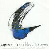

Celtic Lyrics Corner > Artists & Groups > Capercaillie > The Blood Is Strong > An Gille Ban
|  | An Gille Ban |
| Credits : | Traditional; arranged by Capercaillie |
| Appears On : | The Blood Is Strong |
| Language : | Gàidhlig (Scottish Gaelic) |
| Other Versions : | " An T-Iarla Diurach " on Capercaillie's album Cascade |
| Lyrics : | English Translation : |
| Ma's ann 'gam mhealladh, a ghaoil, a bha thu | If deceiving me, oh love, thou wert |
| Ma's ann 'gam mhealladh as deigh do gheallaidh | If deceiving me despite thy vow |
| 'Se luaidh do mholaidh ni mi gu brath | Yet chant thy praise I ever will |
| Ma's ann 'gam mhealladh, a ghaoil, a bha thu | Though deceiving me, oh love, thou wert |
| Righ, gur mise tha gu tursach | Oh King, I am the sorrowful one |
| Gaol an iarla 'ga mo chiurradh | And the love of the Earl a-hurting me |
| Tha na deoir a'sior-ruith o m' shuilean | The tears are ever running from mine eyes |
| 'S mo chridhe bruite le guin do ghraidh | And my heart is bruised with the sting of thy love |
| Ma's ann 'gam mhealladh, a ghaoil, a bha thu | Though deceiving me, oh love, thou wert |
| Thig, a ghaoil, agus duin mo shuilean | Come, oh love, and close my eyes |
| 'S a' chiste-chaoil far nach dean mi dusgadh | In the narrow kirst where I shall never awake |
| Cuir a sios mi an duslach Diurach | Lay me down under earth from Jura |
| Oir 's ann 's an uir a ni mise tamh | In the grave alone is there rest for me |
| Ma's ann 'gam mhealladh, a ghaoil, a bha thu | If deceiving me, oh love, thou wert |
| Ma's ann 'gam mhealladh as deigh do gheallaidh | If deceiving me despite thy vow |
| 'Se luaidh do mholaidh ni mi gu brath | Yet chant thy praise I ever will |
| Ma's ann 'gam mhealladh, a ghaoil, a bha thu | Though deceiving me, oh love, thou wert |